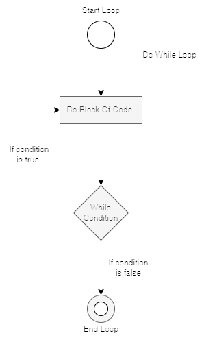
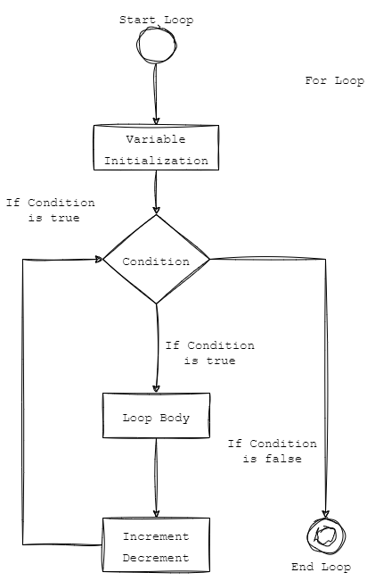
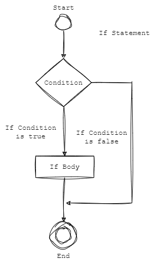
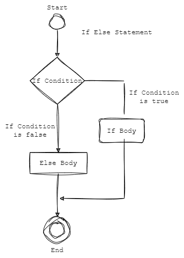
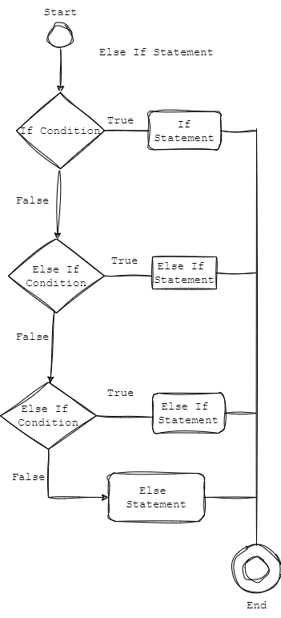
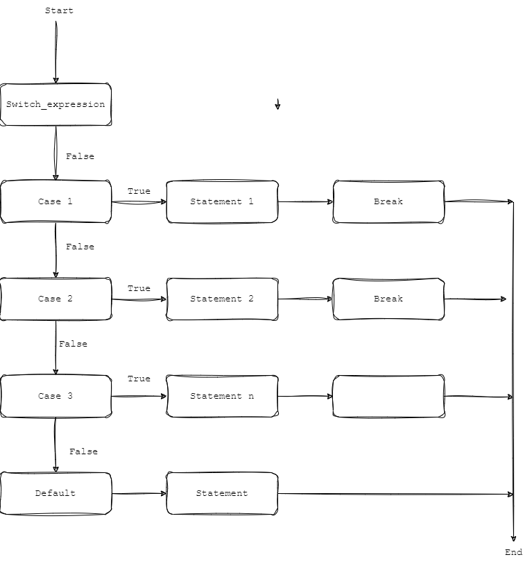

-
Do_While Loop:-do_while Loop जब तक condition true होती है तब तक statements को बार-बार executes करता रहता है और जब condition false हो जाती तब एक बार statement को execute करता है |

-
For Loop:-
For Loop में दिए हुए number तक statements repeat होते रहता है |

-
For In Loop:-For..in Loop से Object की हर एक property को iterate किया जाता है |
Variable:-
यहाँ पर object की properties को iterate करने के लिए variable लिया जाता है |
Object:-
यहाँ पर जिस Object की properties को iterate करना है उस object का नाम आता है |
-
If Statement:-
If Statement में जब condition 'true' होती है तब if statement execute होता है |अगर condition false होती है तो statement execute नहीं होता |

-
If Else Statement:-if_else Statement में जब condition 'true' होती है तब if का statement execute होता है अगर condition 'false' होती है तो else का statement execute होता है |

-
Else If Statement:-else_if Statement में अगर if की Condition true होती है तो if का statement execute होता है | अगर if का condition false होता है तो वो अगले condition पर जाकर check करता है | अगर वो condition true होता है तो वो उसका statement execute करता है | अगर कोई भी condition true नहीं होती तो वो else का statement execute करता है |

-
Switch Case Statement:-Switch case statement में expression होता है और उससे related कुछ cases होते है | जो case उस expression या declare किये हुए variable से match होती है तब वो execute होता है | अगर कोई भी case expression से match नहीं होती तो वो default का statement execute करता है | हर statement के बाद break लगाना पड़ता है, इसका मतलब वो उसके पहले का statement ही execute करेगा | अगर break नहीं लगाया जाता तो वो पहला और दूसरा ये दोनों statement को execute करेगा | default case के बाद break नहीं लगाते |

-
Continue and Break Statement:-Continue और Break Statements; Loops के लिए use किये जाते है |
Continue Statement
Continue Statement का इस्तेमाल कुछ statements को skip करने के लिए use किया जाता है |
Break Statement
Break Statement में loops और switch case के execution का काम किसी condition पर stop कर देता है |